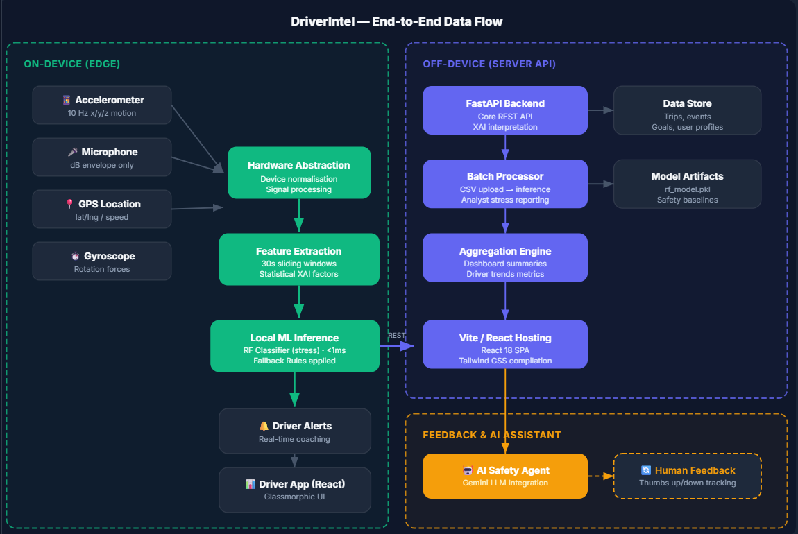

01 Product Vision
Who it's for, what it does, and why it's built this way.
User Persona
Full-time ride-hailing driver in a major metro city. Drives 8–10 hours daily. Cares about two things: staying safe on chaotic roads and hitting daily performance goals. Not deeply tech-savvy — needs information delivered at a glance, not buried in heavy statistics.
Core Value Proposition
DriverIntel transforms raw trip signals — accelerometer, spatial GPS, audio dB — into highly actionable insights:
- Safety & Coaching alerts — Detects potentially dangerous situations via Multi-factor ML (hard braking, rough maneuvering, loud cabin) and provides instant explainable tips via AI.
- Predictive Pathing — Forecasts performance and guides towards goals efficiently with dynamic visual risk mapping.
The "Glanceable" Test
A driver can't read a dense dashboard while navigating traffic. Every screen in DriverIntel is designed to pass the 2-second glance test:
- High-Contrast Aesthetics — Specifically built to be dark, frosted, and low glare for night driving without eyestrain.
- Dashboard — Clean, focused summary cards utilizing primary color signaling.
- Timeline Tracking — Visual hourly blocks indicating stress loads at a glance.
02 Overall Architecture
End-to-End Data Flow from Edge to Cloud Insights

The system is split into two massive segments. Edge processing runs live data locally to guarantee zero latency and complete offline persistence for immediate danger alerts. Server API routing manages batch processing overhead and syncs AI interactions where robust NLP computation is requested.
03 Stress Detection ML Algorithm
Lightweight signal processing, sensor fusion, and false-positive reduction.
Pipeline
Cleaning Noisy Motion Data (HAL)
Phone sensors are noisy and device-dependent. Our Hardware Abstraction Layer runs calibration:
- Audio baseline: Stationary recording establishes ambient noise floor. Normalises mic sensitivity across models.
- Road baseline: Driving >20 km/h detects gravity axes and measures standard road vibration. Subtracts ordinary driving noise from events.
Data Privacy
Audio features are acoustic statistical aggregates only — no raw voice audio stored or transmitted to the backend (privacy by design). The backend parses numeric severity parameters alone.
Output & Explainability
Engine spits out confidence intervals. When events occur, feature weights are analyzed to determine the exact cause (e.g. "You were braking too heavily") which drives the AI Safety Copilot.
04 Driver Safety Goals Forecaster
Forecasting event tracking and goal resolution.
Users establish custom performance goals directly targeting weak habits identified by the AI. Trend line analysis determines if the driver is successfully migrating their driving habits towards the stated objective (e.g. fewer deep acceleration events). The ML trends calculate rolling regression to map success probability.
05 Execution Strategy
MVP scope and development milestones.
Tech Stack Core
Frontend (Local Web/App)
- React 18 & Vite
- Tailwind CSS (Glassmorphic implementation)
- Recharts (Dashboard components)
- Leaflet API (Risk Mapping)
Backend (Cloud Sync API)
- Python 3.11 & FastAPI
- Gemini LLM Toolkit
- Random Forest Inference CLI
- Batch processing hooks
06 Deployment & Docker Setup
Zero-setup runtime orchestration.
The entire platform operates via containerised stacks to run concurrently without complex dependency resolution.
- Install Docker Desktop.
git clonethe repository.- From root run:
docker compose up --build - Navigate to
http://localhost:5173to explore the live DriverIntel dashboard.